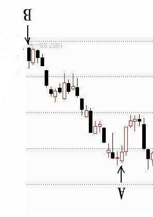

第291篇•试用亚当理论预测沪指短期走势
谷为陵
在上证指数跌破2000点后，A股的四大市场都开始了加速下跌。现在大家都很关心股市的短期走势到底会怎样，是继续加速下跌呢，还是会止跌反弹。这又涉及到股市的预测问题。很多的技术分析方法都试图预测股市，但效果并不好。根据我的研究，我发现在预测股市的短期走势方面，表现最好的非亚当理论莫属。
亚当理论是一个很神奇的理论，它非常简单，简单到几句话就可说完，但它却道出了交易的本质，很多交易者仰仗该理论赚了大钱。亚当理论认为赚钱最重要，其核心思想就是为了让交易者赚钱。该理论认为，分析市场是一回事，而赚钱是另外一回事，言外之意是，很多技术分析理论都是马后炮，只会解释，但不能保证赚钱。亚当理论怎样保证交易者赚钱呢？该理论提出的理论和方法就是简单的四个字——顺势交易。不要小看这四个字，它是一切赚钱的交易的秘诀。我的主升浪战法，也属于顺势交易的范畴。
那么，什么是顺势交易呢？顺势交易就是追涨杀跌。如下图所示：
在上图中，典型的“亚当式”买点是C，典型的“亚当式”卖点是E,亚当理论的所有钱都是在C点与E点之间赚到的。
买点为什么不是A点呢？因为A点时，价格还在下跌，为什么要买？买点为什么不是B点呢？B点不是最低点吗？因为在B点时，并不知道这就是最低点，只有当价格走到了C点，才能够确认B点是低点。也就是当价格走到了这个C点，才能够确认价格已经扭转了下跌趋势，有可能开始了上涨趋势，于是，按照顺势交易的原则，C点就成为了买点。当然，C点不见得就是真正的买点，但亚当理论对此早有防范，我以后还会讲到这个问题。
卖点为什么不是D点呢？这不是最高点吗？因为在D点时，并不知道这就是最高点，只有当价格走到了E点，才能够确认D点是高点。为什么要在E点卖呢？因为亚当理论将止盈与止损位置设在离最高点较近的地方，一旦价格从最高点回落设定的幅度，就会卖出。
亚当理论决不奢求赚足一波上涨行情，它只满足于赚取其中的50%就够了。令人惊异的是，在多数情况下，亚当理论还真的能够保证做到这一点。这其中的妙处，实在值得仔细体味。
好了，我们再来说说亚当理论是怎样做到顺势交易的，这可是该理论的一个绝招。所谓顺势，就是要顺着趋势。什么是趋势？不同的投资理论对趋势有不同的定义和解释。亚当理论对于趋势的定义很奇特，它认为趋势就是一再重复的事情。一再重复的基本形式是什么？是精确重复！而精确重复一定会导致对称。而最强烈的对称，就是中心对称！
比如，下图有两个点A点和B点，那么，下一个C点最有可能在什么位置？
如果我们以B点为中心建立一个坐标系，那么，就容易看清楚了，如下图所示：
若以B点为中心，则A点的中心对称点就是C点。在知道了这个中心对称的原理后，我们再来看看下图中左侧的A点、D点，在图中右侧的中心对称点在哪里呢？图中左侧代表过去，纵轴代表现在，右侧代表未来：
我们还是按照中心对称原则，按照时间顺序分别找出A点、D点的中心对称点C点、E点，如下图所示：
在将上图中的A、D、B、E、C点顺序连接起来后，就是一个价格的中心对称走势图，其中，E点、C点分别精确重复D点、A点的走势。
亚当理论的中心对称图，就是预测价格短期走势的秘密武器。那么，这种预测是否正确呢？经过大量的测试后，亚当理论得出了结论：市场越接近“现在”的时点，价格移动的速率越快，那么，中心对称性就越强。这意味着，只要一个价格趋势是处于快速上涨或者下跌，那么，利用中心对称法则，就能够较好地预测价格的短期走势。所以，要预测市场的短期走势，就只需要画出市场的中心对称图就可以了。
画中心对称图很简单，其步骤为：
1、在图上放一块透明胶片。
2、拿一支能在胶片上画图的笔，从最近的那一天开始，在图上画出过去某一天，天数由你任意定。
3、然后将胶片旋转180度，把胶片上的第一天（左手边）与图上的最近一天重叠。
这样你就完成了中心对称图！
我现在以上证指数的近期走势作为实例，给大家讲讲中心对称图的画法。
1、 先拿出上证指数截止到今天收盘的一段日K线图，看着这张图，你认为后市短期是涨、是跌、还是横盘呢？

2、由于从A点到B点是市场的快速下跌阶段，中心对称性最好，因此，我就以今天的B点为中心，作出A点到B点的未来的中心对称图。先用透明胶片将A点到B点都画出来，如下图所示：
3、再将上图旋转180度：
（旋转90度）

（旋转180度）
4、将旋转后的图与上证指数进行重叠，重叠时将B点重叠在一起就可以了，如下图所示：
上图中的B点到A1点，就是A点到B点的中心对称图，用蓝框画出。根据这个中心对称图，显示上证指数在短期内还是会快速下跌。至于这个结果对不对，我们可以在今后几天进行验证。需要注意的是，中心对称图需要每天更新,进行微调，如果我有时间可以和大家一起连续跟踪几天，大家若有兴趣也可自己动手画一下。亚当理论适用于任何市场以及任何交易品种，也适合任何时间周期。